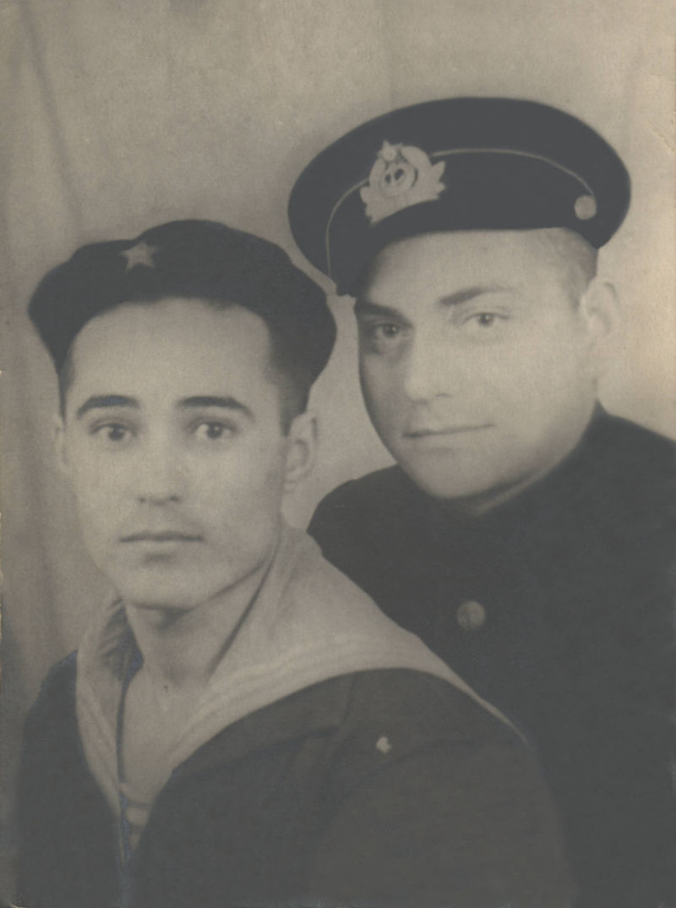Юзеф Злотник с неизвестным. Новороссийск, 19 октября 1941 года. Фото из архива Злотника.
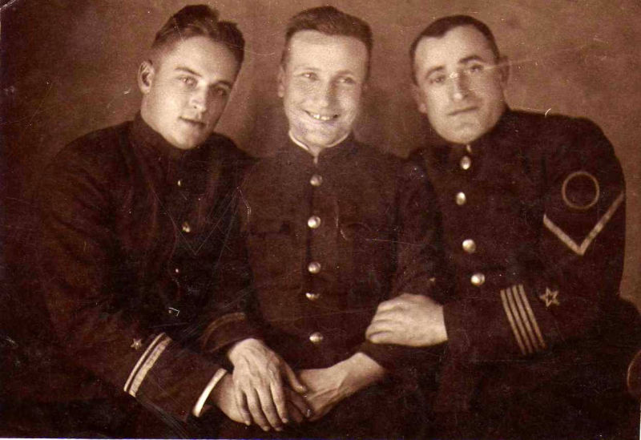Батуми, 20 ноября 1941. Алексндр Гройсман (справа) с сослуживцами. Фото из архива Гройсмана.
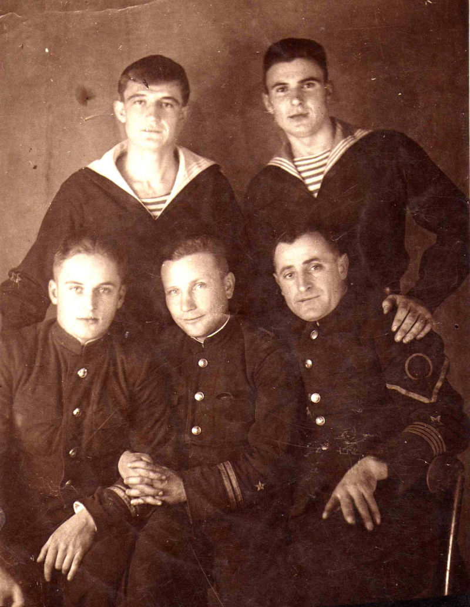Батуми, 20 ноября 1941. Алексндр Гройсман (сидит справа) с сослуживцами. Фото из архива Гройсмана.
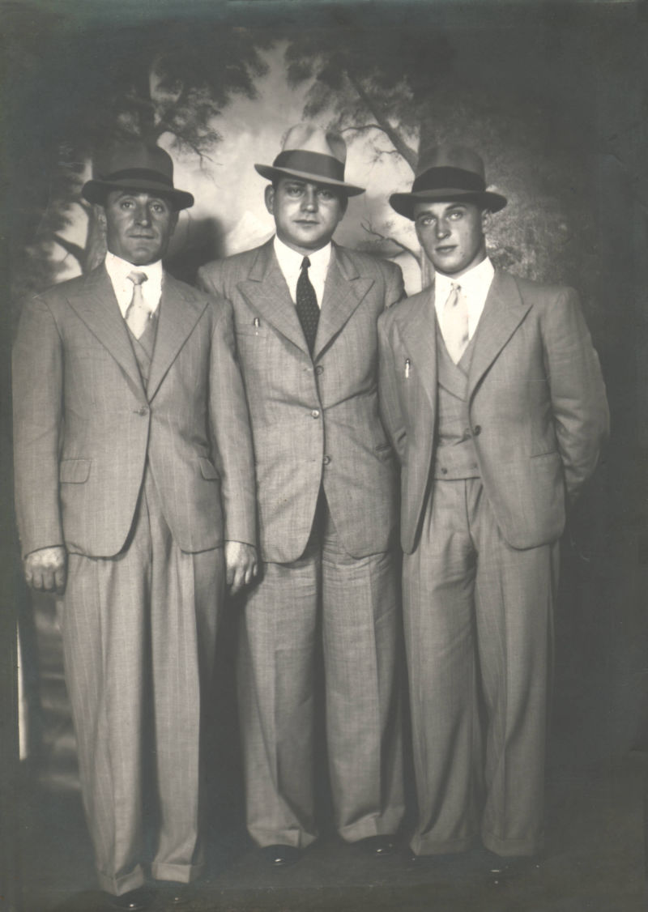Александр Гройсман (слева), Юзеф Злотник (в центре) и неизвестный член экипажа "Микояна" в костюмах, выданных им в Батуми при разоружении корабля. Фото из архива Злотника.
Александр Гройсман (слева), Юзеф Злотник (в центре) и неизвестный член экипажа "Микояна" в костюмах, выданных им в Батуми при разоружении корабля. Фото из архива Гройсмана
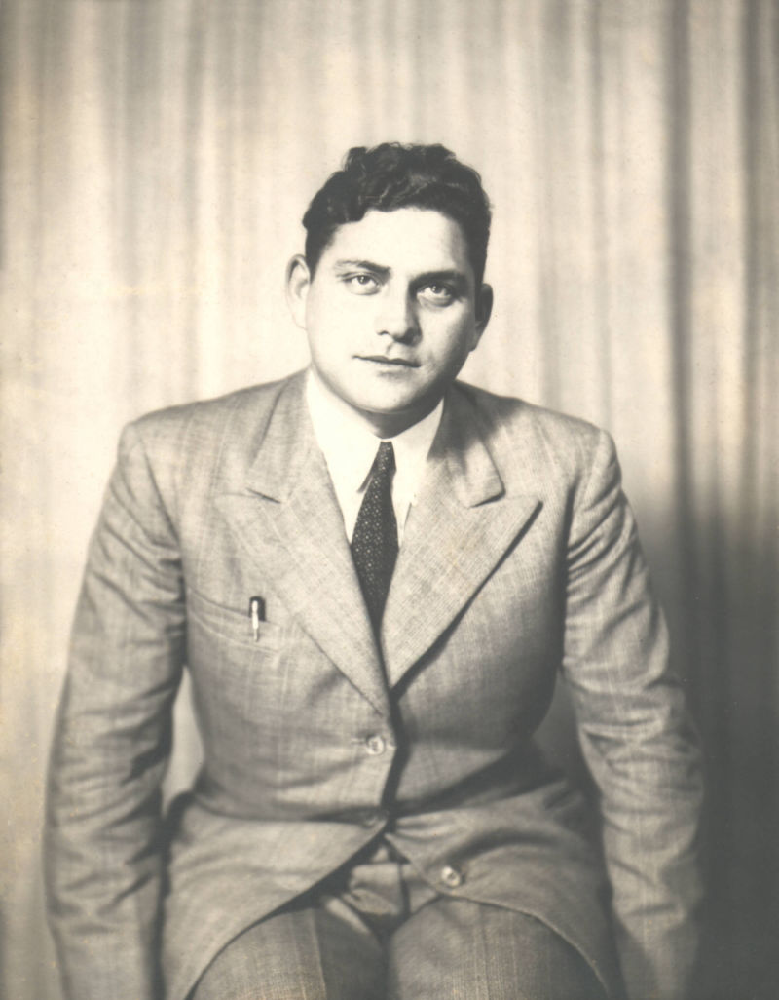Юзеф Злотник в костюме, выданном ему в Батуми при разоружении корабля. Фото из Архива Злотника.
Гибель британского танкера "Феникс", подорвавшегося на мине в порту Хайфы. Справа - "Микоян". Взрыв вызвал страшный пожар в порту. Фото из архива Гладуша.
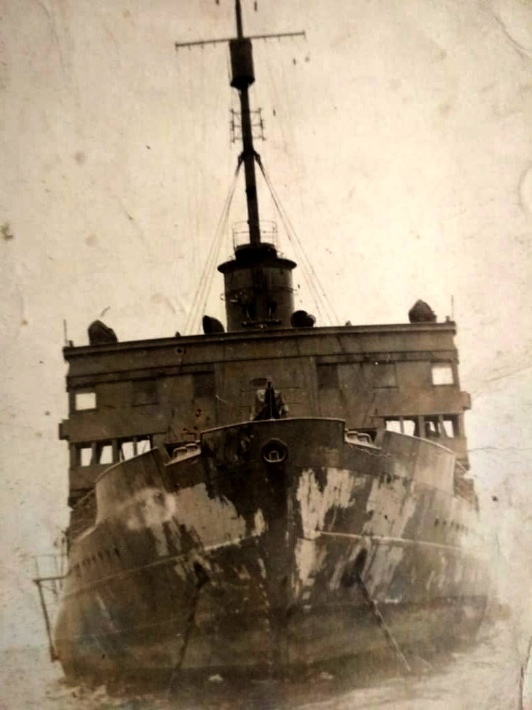Обгореший корпус "Микояна" после пожара в Хайфе. Фото из архива Донаусова.
Экипаж "Микояна" на фоне Египетских пирамид. 15 января 1942 года. Фото из архива Злотника.
Экипаж "Микояна" на фоне Египетских пирамид. 15 января 1942 года. Фото из архива Гладуша.
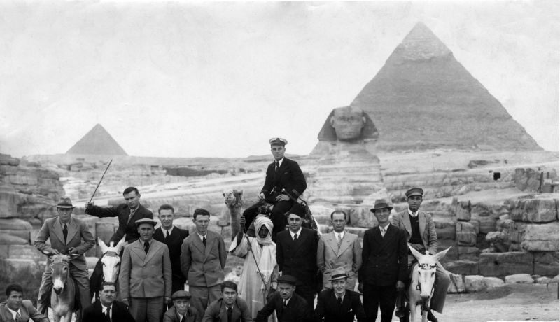Экипаж "Микояна" на фоне Египетских пирамид. 15 января 1942 года. Фото из архива Гладуша.
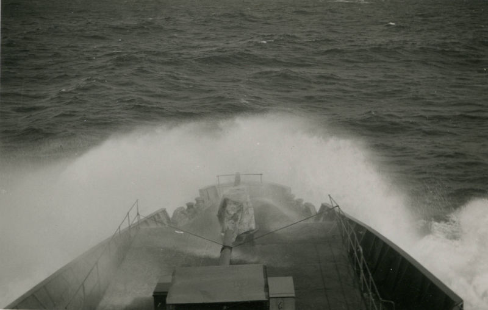Муляж пушки, установленный на корабле для отпугивания вражеских кораблей. Фото из архива капитана Сергеева.
Вид "Микояна" сверху. На носу корабля виден муляж пушки. Фото из архива Гладуша.
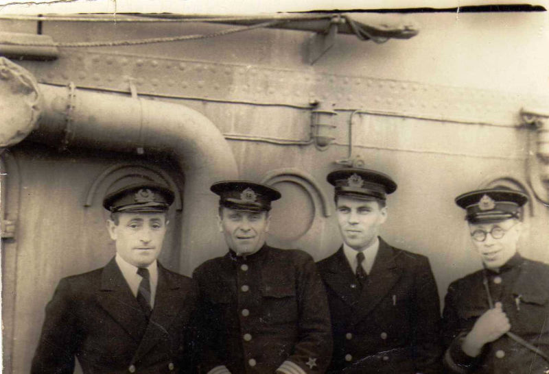Гройсман (слева) и Марлян (второй справа) с другими старшми офицерами на борту "Микояна". Фото из архива Гройсмана.
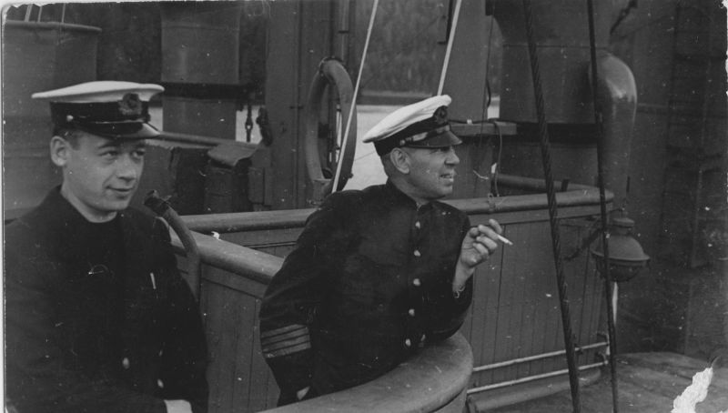Капитан Сергеев (справа) с вахтенным штурманом. Тихий океан, 1942. Фото из архива Гладуша.
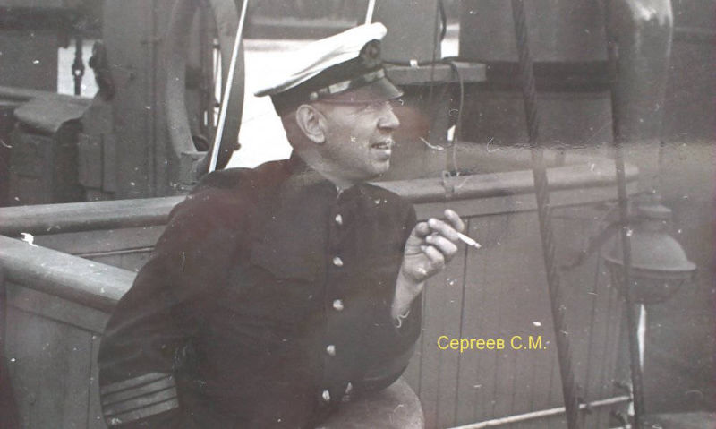Капитан Сергеев на борту "Микояна". Фото из интернета.
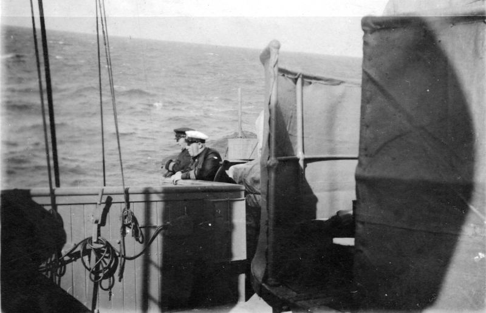На борту "Микояна". У борта - капитан Сергеев. Фото из архива Гладуша.
Команда корабля на борту собирается смотеть фильм. Фото из архива Гладуша.
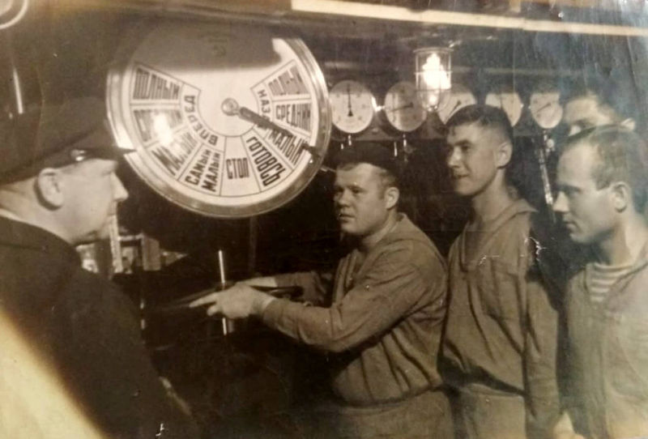Второй механик Донаусов (слева) и машинисты Ройзин, Николаенко, Крулин, Ляхов в машинном отделении "Микояна". 1942 год (возможно, фото сделано уже после кругосветки и расформирования экипажа, в 1943 году). Фото из архива Донаусова.
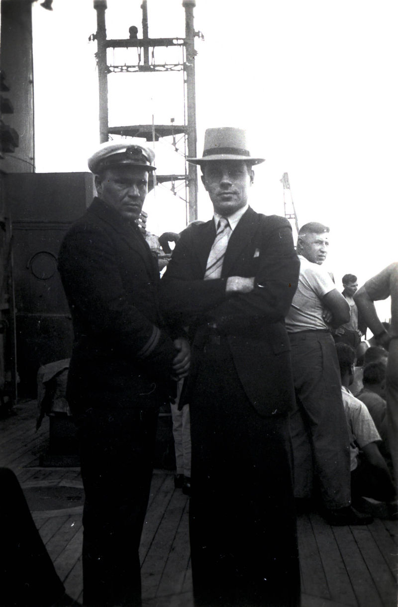Старпом Холин (слева) и штурман Марлян (справа) на борту корабля. Фото из архива капитана Сергеева.
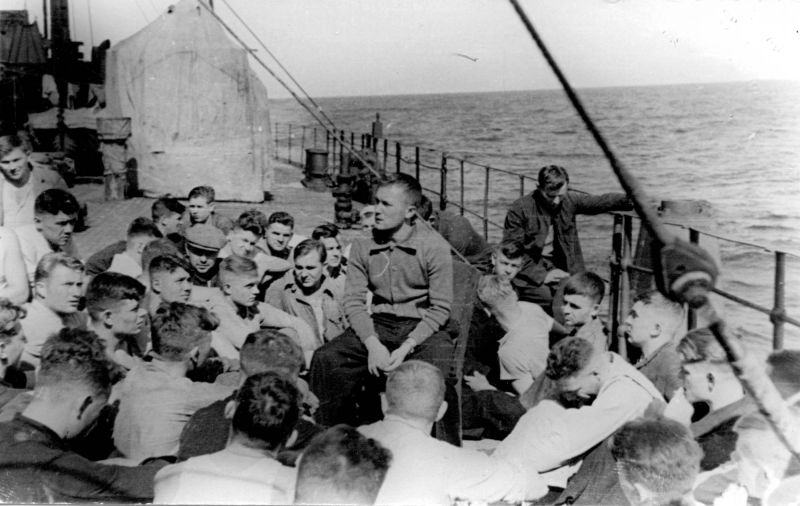Доктор Попков (на возвышени) проводит на борту лекцию для экипажа корабля. Фото из архива капитана Сергеева.
Монтовидео, Уругвай, апрель 1942. Команда корабля возлагает венки к подножию статуи генерала Артигаса. Фото из архива Гладуша.
Монтовидео, Уругвай, апрель 1942. Команда корабля возлагает венки к подножию статуи генерала Артигаса. Фотография из архива капитана Сергеева
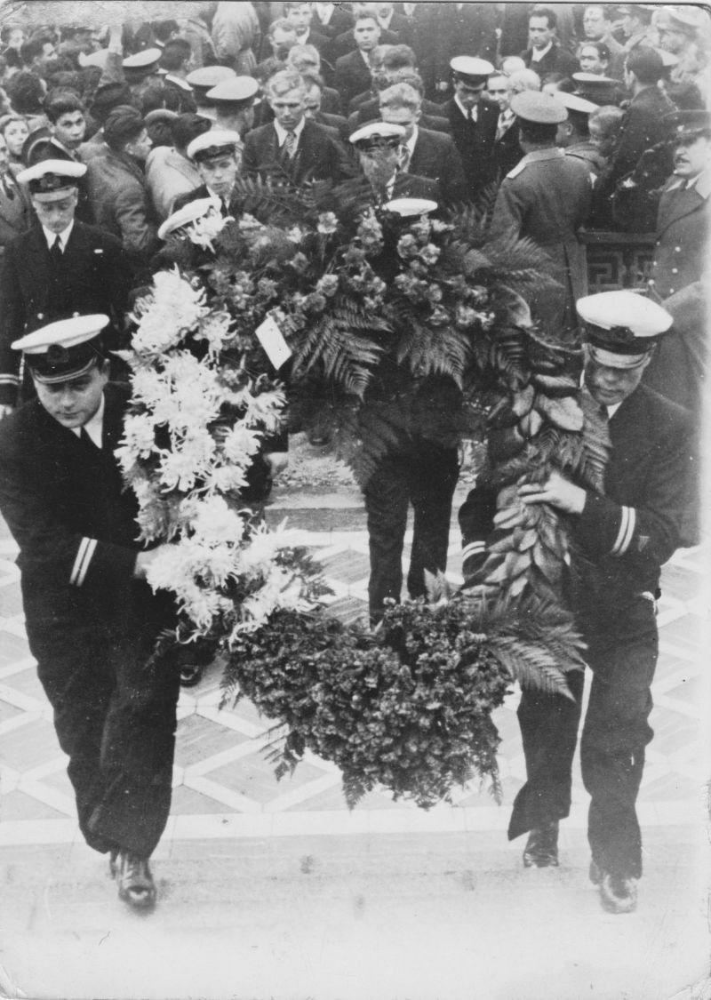Монтовидео, Уругвай, апрель 1942. Команда корабля возлагает венки к подножию статуи генерала Артигаса. Фото из архива Гладуша.
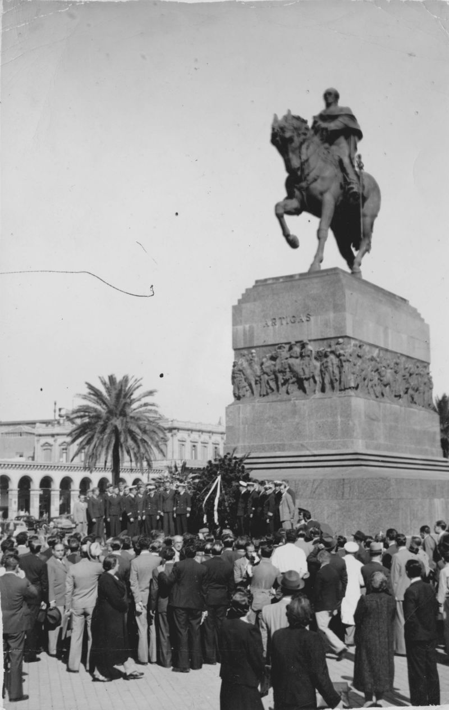Монтовидео, Уругвай, апрель 1942. Команда корабля возлагает венки к подножию статуи генерала Артигаса. Фото из архива Гладуша.
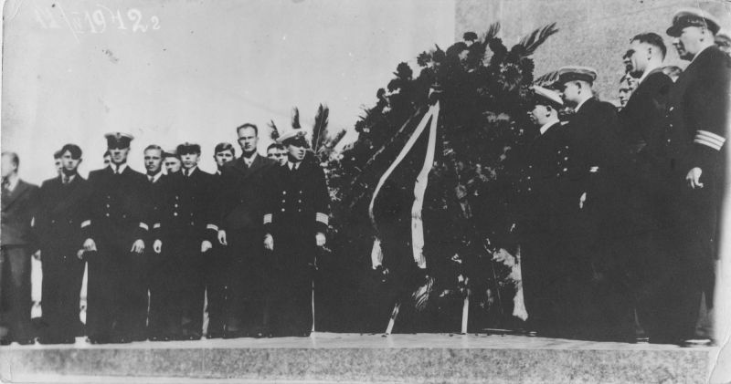Монтовидео, Уругвай, апрель 1942. Команда корабля возлагает венки к подножию статуи генерала Артигаса. Фото из архива Гладуша.
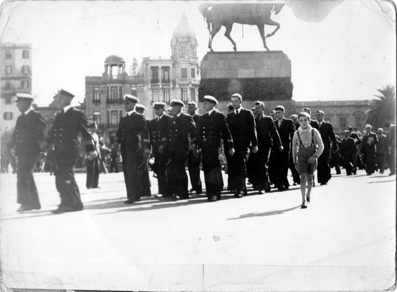Монтовидео, Уругвай, апрель 1942. Команда корабля возлагает венки к подножию статуи генерала Артигаса. Фото из архива Гладуша.
Монтовидео, Уругвай, апрель 1942. Команда корабля возлагает венки к подножию статуи генерала Артигаса. Фото из архива Гладуша.
Монтовидео, Уругвай, 15 апреля 1942. Командр корабля у памятника первым переселенцам. Фото из архива Злотника.
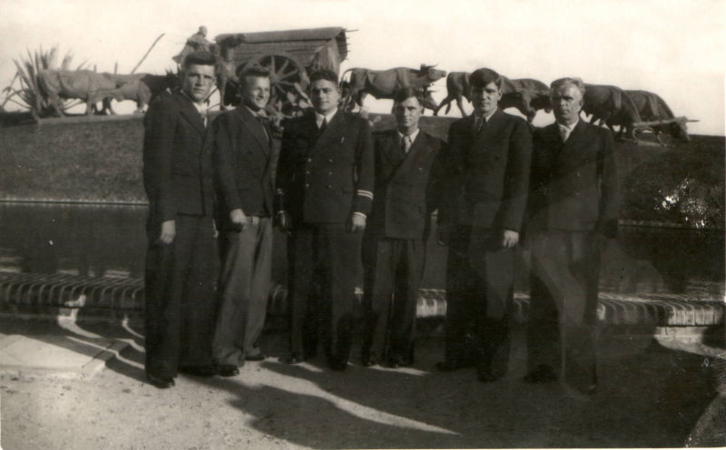Монтовидео, Уругвай, 15 апреля 1942. Командр корабля у памятника первым переселенцам. Фото из архива Злотника.
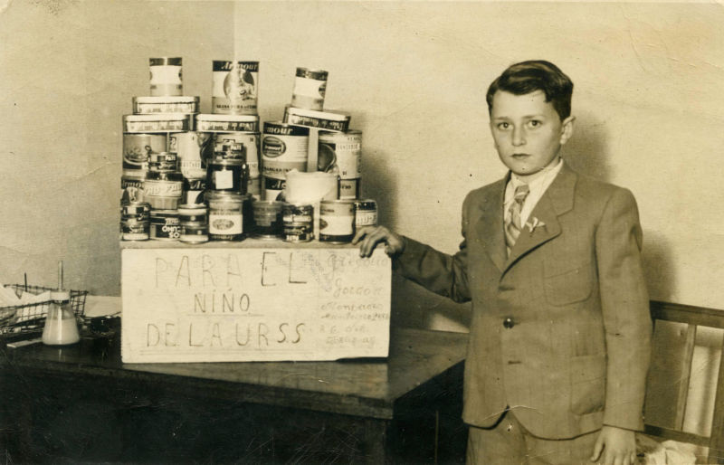Уругвайский мальчик (возможно, сын русских имигрантов, судя по имени и фамилии) Григорио Гордон передает свой социальный подарок экипажу корабля. Фото из архива капитана Сергеева.
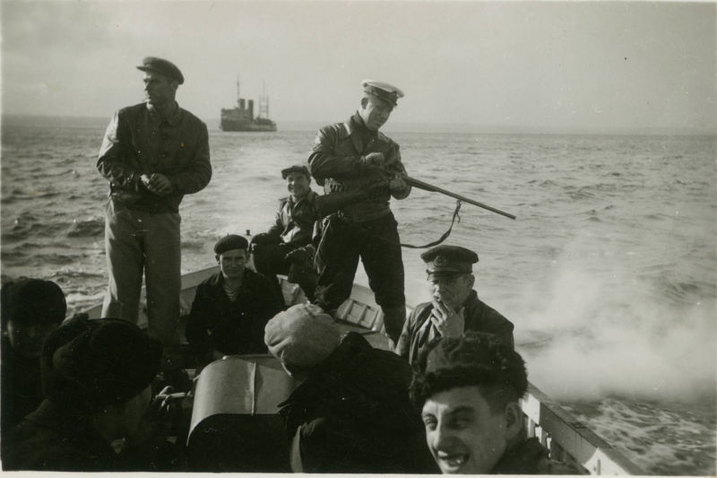Магеланов Пролив. Экипаж отправляется на охоту. Капитан Саргеев с личной винтовкой, сохранненой при разоружении корабля. Фото изз архива капитана Сергеева.
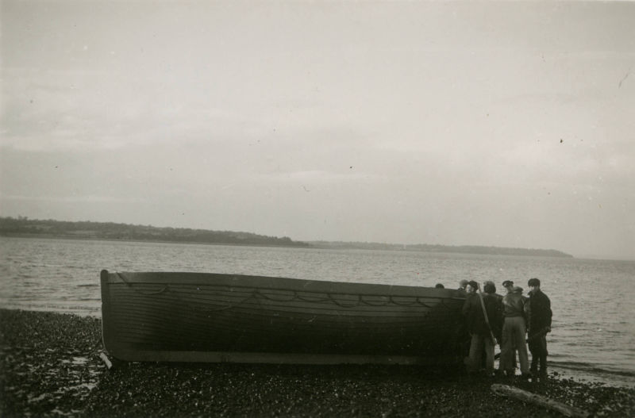Магеланов Пролив. Экипаж отправляется на охоту. Капитан Саргеев с личной винтовкой, сохранненой при разоружении корабля. Фото изз архива капитана Сергеева.
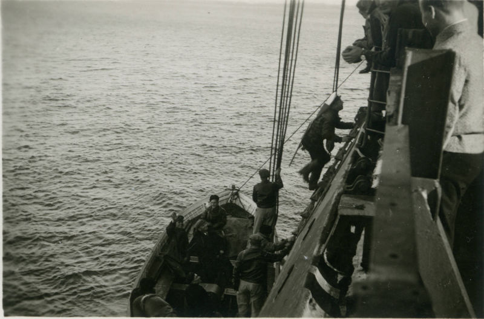Магеланов Пролив. Экипаж отправляется на охоту. Капитан Саргеев с личной винтовкой, сохранненой при разоружении корабля. Фото изз архива капитана Сергеева.
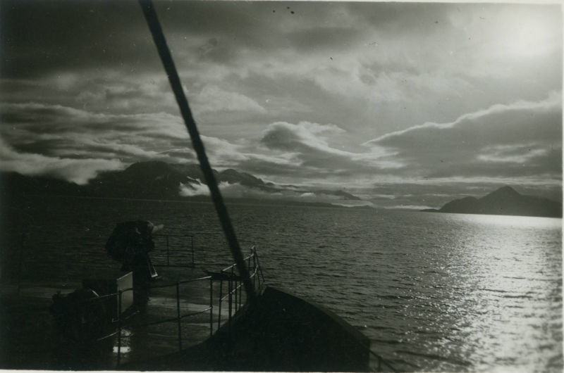Фото, сделанное с борта "Микояна". Фото из архива капитана Сергеева.
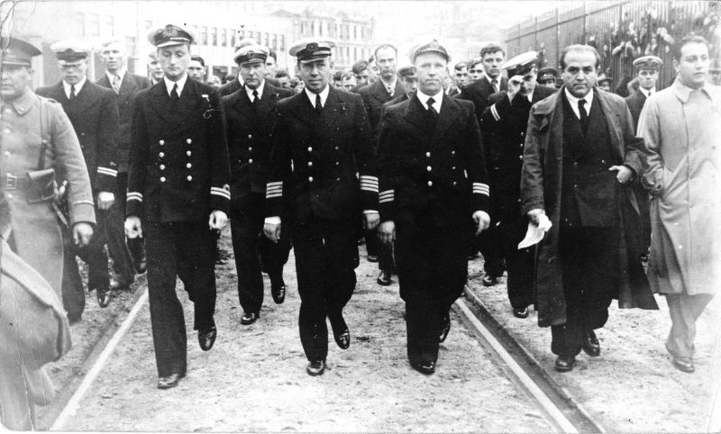Май 1942, Вальпароисо, Чили. Выход экипажа с корабля на берег. Фото из архива Гладуша.
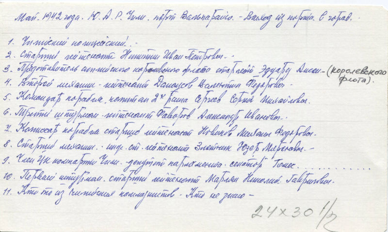Оборотная сторона фотографии, сделанной при сходе экипажа с корабля на берег в Вальпароисо, Чили в мае 1942. Надпись сделана рукой Кузова. Фото из архива капитана Сергеева.
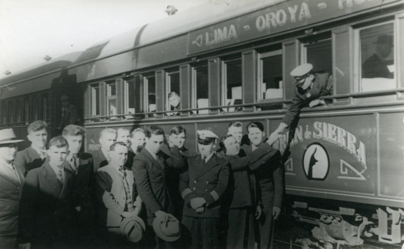Экипаж на высокогорной железной дороге в Перу. фото из архива капитана Сергеева.
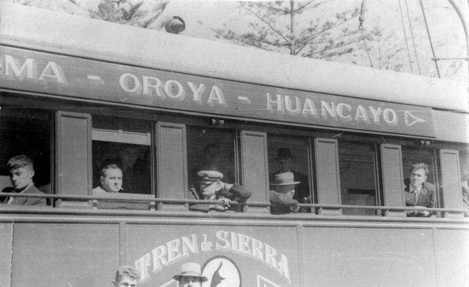Экипаж на высокогорной железной дороге в Перу. фото из архива Гладуша.
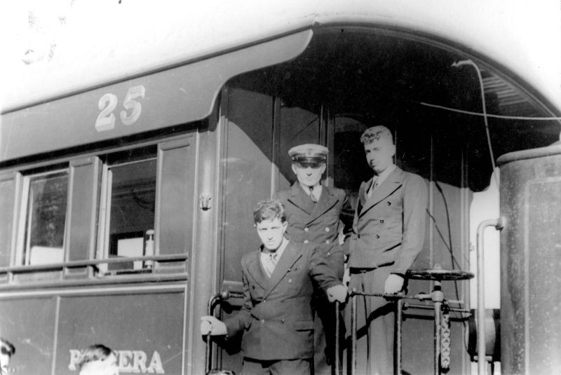Экипаж на высокогорной железной дороге в Перу. фото из архива Гладуша.
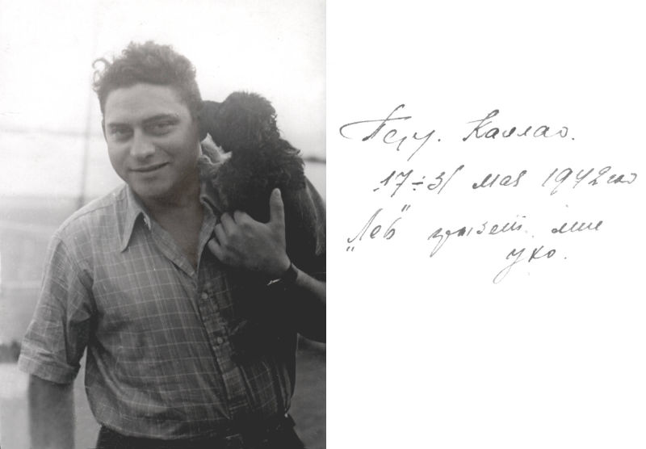Старший механик Злотник со щенком на руках в Перу.
Капитан Сергеев (слева) и старший механие Юзеф Злотник (справа) в Сиэтле. Фото из архива Юзефа Злотника.
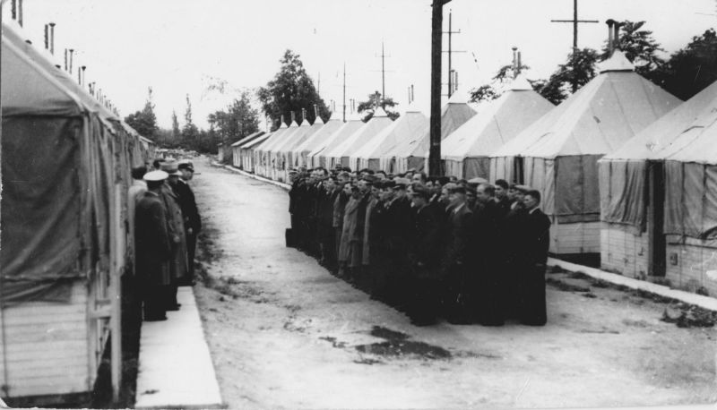Сиэтл, полаточный городок, в котором жил экипаж во время дезинфекции корабля. Фото из архива Гладуша.
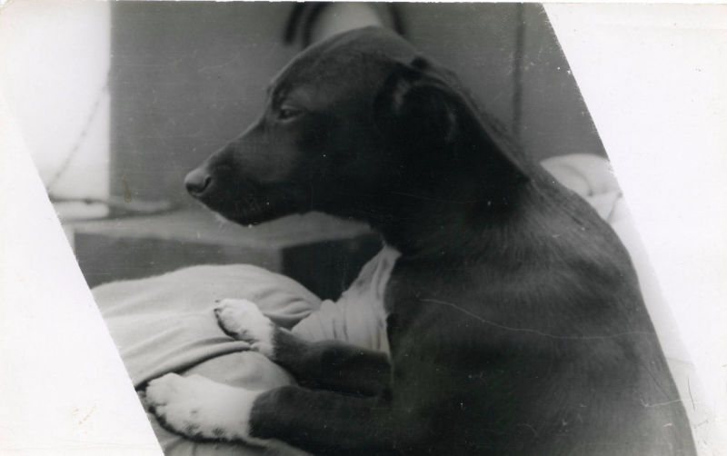Пес капитана по кличке Арапчик, который "воевал" на борту "Микояна". Фото из архива капитана Скргеева
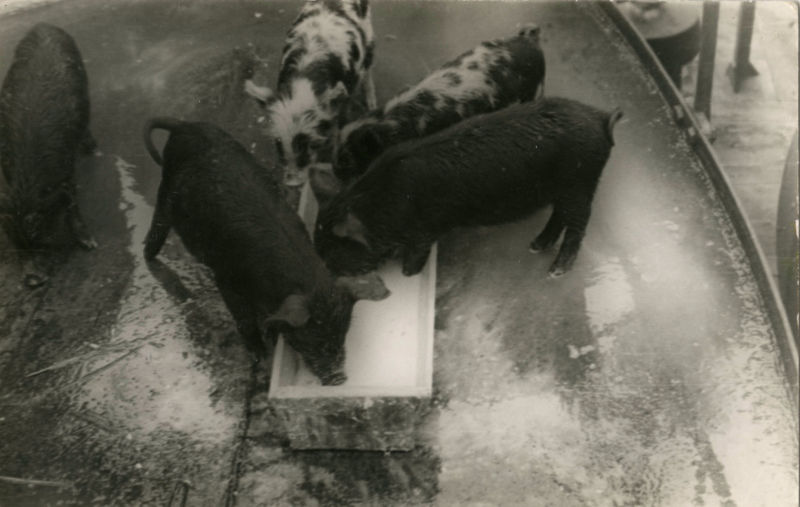Свиньи на борту "Микояна"
Кочегары на борту "Микояна" собираются резать свинью. Фото из архива капитана Сергеева.
"Микоян". Фото из архива капитана Сергеева.
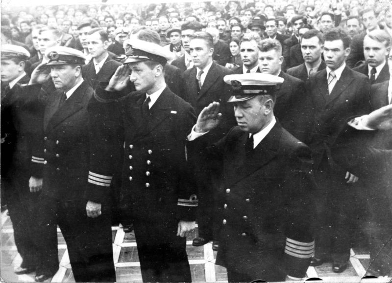Команда корабля на берегу. В первом ряду стоят Донаусов, Энсон и капитан Сергеев. Фото из архива Гладуша.
 Команда корабля на берегу. Фото из архива Гладуша.
Команда корабля на берегу. Фото из архива Гладуша.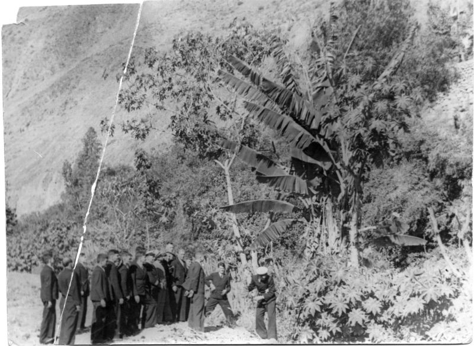Команда корабля на берегу. Фото из архива Гладуша.